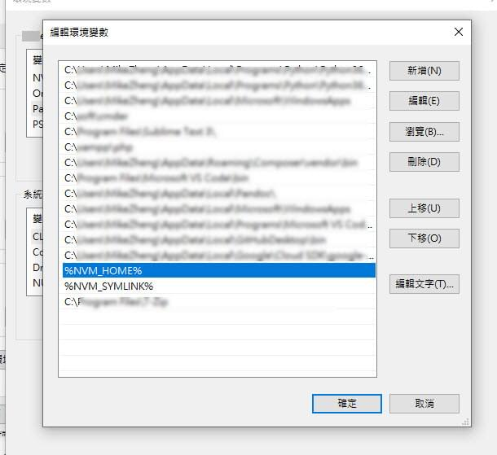
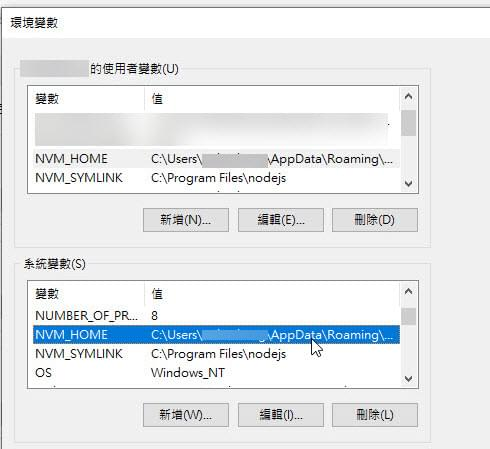

[筆記]vue-cli , npm install -g , yarn global add 無法更新問題 (windows系統)
Contents
vue-cli , npm install -g , yarn global add 無法更新問題 (windows系統)
紀錄vue-cli想要更新到最新版本，依照官方文件卻無法成功的問題，
關鍵字
- vue-cli 無法更新
- npm install -g 無法更新
- yarn global add 無法更新
使用環境為windows
安裝nodejs後 安裝nvm 版本控制
稍微看了系統抓藥了一下
主要無法進行全域刪除及更新原因 為npm路徑問題
尤其安裝完nvm 版本控制 導致npm有多個路徑
基礎概念
1.使用nvm版本控制後，安裝的npm global模塊會出現於nvm底下的各版本node路徑
2.npm 指令可能會跟著.npmrc 的prefix跑
因此排除錯誤步驟先前往windows環境設定
錯誤排除
1. windows環境設定
查看環境設定
- 電腦滑鼠右鍵
- 從內容功能表中選擇內容
- 按一下進階系統設定tab
- 按一下環境變數
確保path裡有%NVM_HOME%%NVM_SYMLINK%

環境變數存在NVM_HOME : XXXNVM_SYMLINK : XXX

讓node npm 指令等會前往nvm的指定路徑
刪除其他會影響到npm的變數
再將NODE_PATH環境變數刪除
並將環境變數path內的C:\Users\XXX\AppData\Roaming\npmC:\Users\XXX\AppData\Roaming\npm\node_modulesC:\Users\XXX\AppData\Roaming\nvm
之類的移除或是你懶惰將他的順序往後挪也是可以
修改 .npmrc prefix設定
查看目前設定
先於指令查看目前設定
npm config list
編輯 .npmrc
若有設定prefix將其移除
C:\Users\%username%\.npmrc
如果有的話將 prefix=“…路徑”
這行刪除
基本上使用nvm會切node版本的話，建議是不要設定的，會導致npm指令導向某一個路徑的npm下，而讓指令失效
3. 重新安裝package
npm uninstall -g vue-cli
npm install -g @vue/cli
or
yarn global remove vue-cli
yarn global add @vue/cli
4. 檢查
vue -V
此時應該會安裝最新版本了